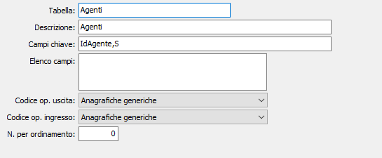

Configurazione tabelle
La tabella consente di memorizzare le informazioni sulle tabelle che saranno oggetto di importazione o esportazione.

TABELLA: indica il nome della tabella presente sul database. Sul campo sono attive le funzioni di ricerca (F9).
DESCRIZIONE: campo descrittivo per indicare il contenuto della tabella.
CAMPI CHIAVE: indica la specifica dei campi che compongono la chiave primaria. Per ogni campo deve essere specificato il nome ed il tipo separati da virgola. I tipi sono: I intero, N numerico decimale, D data, S carattere. Se la chiave è composta da più campi le varie coppie nome + tipo devono essere separate dal punto e virgola.
ELENCO CAMPI: se non si vuole esportare tutta la tabella è possibile specificare un elenco di campi da esportare separati da virgole.
CODICE OP. USCITA: indica la categoria di appartenenza relativa all'esportazione dei dati, valori possibili: anagrafiche generiche, movimenti magazzino, DDT, fatture. Ogni codice operativo comporta specifiche operazioni di trasferimento.
CODICE OP. INGRESSO: indica la categoria di appartenenza relativa all'importazione dei dati, valori possibili: anagrafiche generiche, clienti e fornitori, movimenti magazzino, DDT, fatture. Ogni codice operativo comporta specifiche operazioni di trasferimento.
N. PER ORDINAMENTO: numero d'ordine da utilizzare per la preparazione dei file di uscita, nel caso si debba seguire un preciso ordinamento.